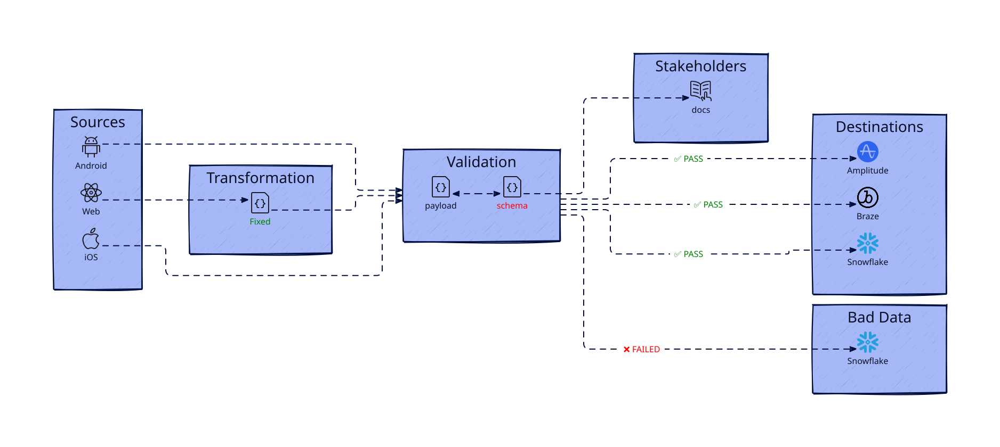
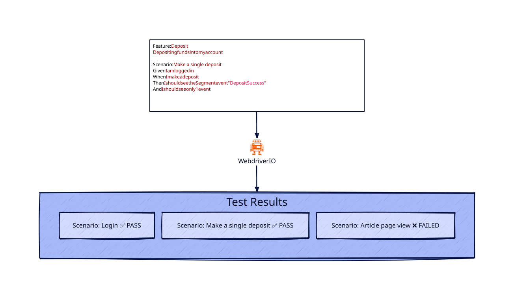
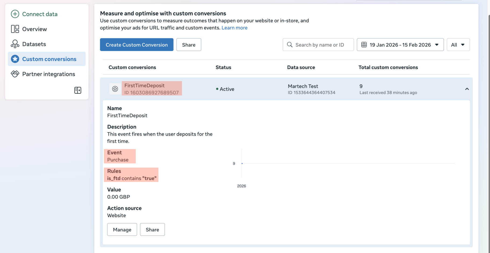

Describe one project where you significantly improved tracking, attribution, or analytics infrastructure.
While at Spotlight Sports Group, maintaining high data quality was particularly challenging. App feature releases occurred every two weeks and required sign-off on more than 80 tracked events. The process was entirely manual, often taking several days to complete. It was error-prone and frequently delayed releases.
The objectives were to:
I led the introduction of a real-time and automated validation framework for tracked events by:
Isolating tracking implementations to align with the development lifecycle: development, testing, UAT and production.
Using JSON schemas that evolved with the tracking requirements.
Leveraging the schemas to produce stakeholder-friendly living documentation.
Facilitated a mechanism to amend tracking in-flight when fixing issues at the source was not feasible within the sprint timeframe.
Designing and maintaining end-to-end automated tests to replace manual validation processes.
As a result:
Figure 1: Tracking plans, transformations, and automation


What are the risks of evaluating performance this way?
Assessing performance solely using these metrics risks skewing the results towards low-cost, short-term acquisitions, while overlooking the long-term quality and value of the acquired users as in the example.
A low CPA may indicate cost efficiency, it doesn't account for whether the acquired user will remain engaged or retain value over time.
Learning phases usually take 7-10 days before they stabilise.
Similary D7 ROAS would not suitable for awareness campaigns as these are placed at TOFU.
What would you change to measure performance more accurately?
I would shift focus from short-term vanity metrics to longer-horizon indicators like D30/D90 revenue, actual LTV, and especially predictive LTV (pLTV), which better captures a user’s long-term value and relationship with the brand. The latter can be expanded into LTV:CAC ratios.
How would you integrate this data into internal reporting?
Leverage Data Locker in AppsFlyer to export data to a storage bucket (e.g.: Google Cloud Storage) or DW (e.g.: BigQuery)
Use Airflow to orchestrate automated workflows that transform the data (e.g.: dbt) into marts
Connect the BI tool (Looker, Power BI, Tableau, etc.) to the marts
How would you avoid double counting?
I would leverage AppsFlyer’s 'Single Source of Truth' which combines all attribution methods used by the platform.
What are the main pros and cons of:
SKAN enables campaign tracking on devices where users have opted out of ATT. However, due to its privacy-centric design, SKAN provides aggregated data instead of user-level insights. Moreover delays of two days or longer is expected.
How would this affect LTV measurement?
Since user-level data is unavailable and conversion data is limited and arrives in different windows, LTV values can't be measured directly. Instead, they are predicted based on early user activity.
| Container Type | Container Name | Container ID |
|---|---|---|
| Server | Brands [Server] | GTM-PZV4FDG4 |
| Web | Brands [Client] | GTM-TSFCWXZZ |
| Brand Name | URL | Meta Pixel ID |
|---|---|---|
| Brand X | brand-x-one.vercel.app |
1533644364407534 |
| Brand Y | brand-y.vercel.app |
2299157367256743 |
| Brand Z | brand-y-zioo.vercel.app |
1514739266263477 |
Track two separate events:
Track a single event Purchase and derive FirstTimeDeposit from Custom Conversions in event manager based on the event parameters.

// Purchase event sample payload
// Endpoint [POST]: https://server-side-tagging-3phkixd4ta-uc.a.run.app/collect
{
"event_name":"purchase",
"event_id":"266375e4-2ce9-4202-b3d9-3de96a6aa57a",
"event_time":1771247930,
"action_source":"website",
"currency":"GBP",
"value":"5",
"is_ftd":"true",
"event_source_url":"https://brand-y-zioo.vercel.app",
"referrer_url":"https://brand-y-zioo.vercel.app/lp/spinners",
"user_data":{
"user_id":"445ef40b-f8e1-4f3f-bb03-f47d93a0875f",
"last_name":"Last Name",
"first_name":"First Name",
"browser_id":"fb.1.1615295627183.1234567890",
"click_id":"fb.1.1615295627183.1234567890",
"email":[
"first_name.last_name@email.io"
],
"phone":[
"4407711283920"
],
"client_ip_address":"31.48.104.214",
"client_user_agent":"Mozilla/5.0 (Macintosh; Intel Mac OS X 10_15_7) AppleWebKit/537.36 (KHTML, like Gecko) Chrome/144.0.0.0 Safari/537.36",
"country":[
"gb"
],
"county":[
"midlothian"
],
"postcode":[
"eh11bb"
],
"city":[
"edinburgh"
],
"dob":[
"19700104"
]
}
}